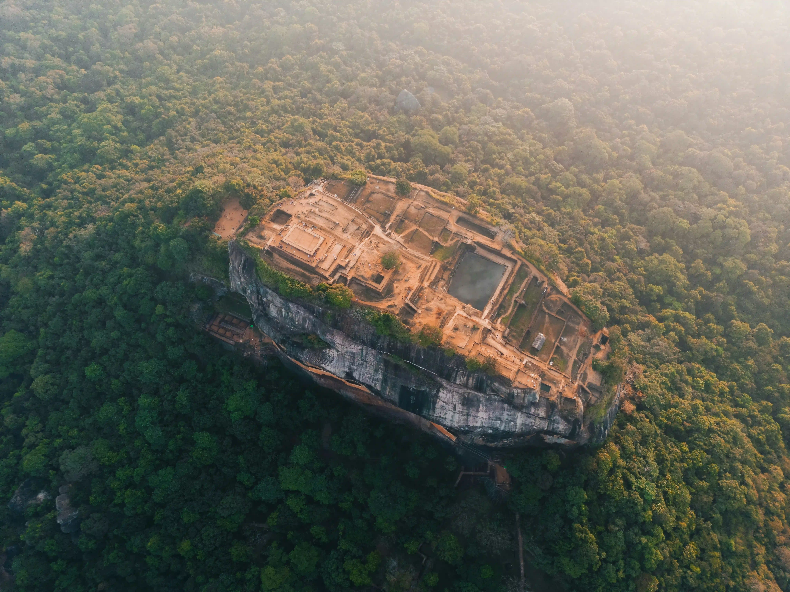
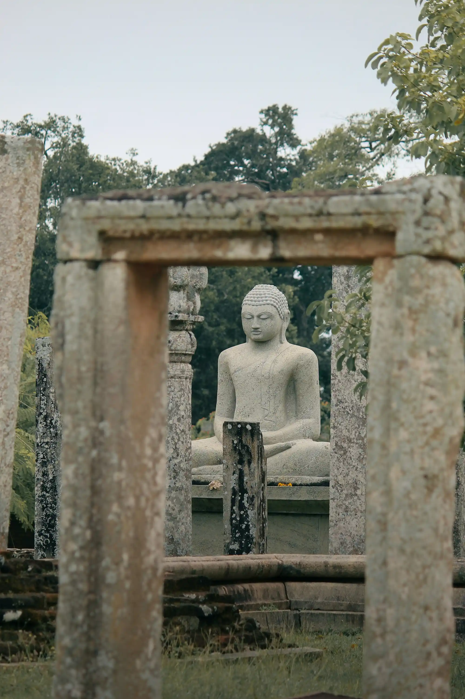
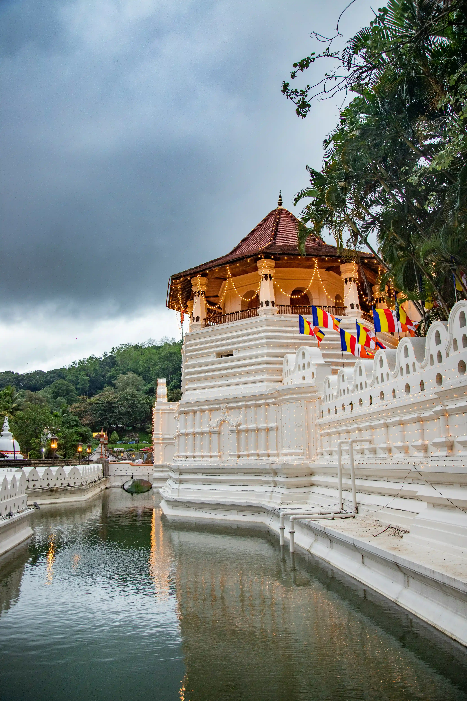

Journey through millennia to uncover the secrets of a civilization that carved its destiny into the very landscape of the island.
Sri Lanka, a compact island in the Indian Ocean, boasts a density of UNESCO World Heritage sites that few other nations can match. From the towering rock fortress of Sigiriya to the sprawling ruins of Anuradhapura, these sites represent the pinnacle of ancient hydraulic engineering and spiritual devotion.
For over 2,500 years, the island has preserved its chronicles in the Mahavamsa, documenting a continuous history of kings, monks, and architects who shaped one of Asia's most sophisticated ancient cultures.

The magnificent "Lion Rock" fortress, a masterpiece of ancient urban planning and frescoes.
Explore →
The first sacred capital, home to massive stupas and the world's oldest documented tree.
Explore →
The last royal stronghold, nestled in the hills and home to the sacred Temple of the Tooth.
Explore →Visit three UNESCO sites located within 100km of each other in the Cultural Triangle.
Witness ancient ceremonies and festivals that have been practiced for over two millennia.
A compact island rich in variety, allowing you to travel between eras in a single day.